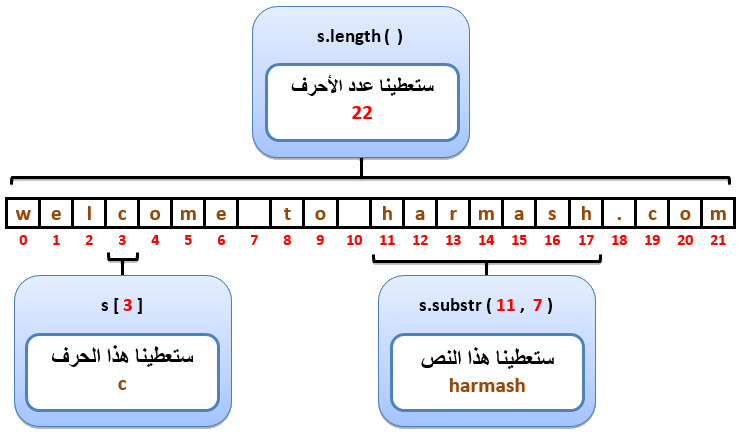

C++التعامل مع النصوص
مفهوم النصوص في C++
في عالم البرمجة, نقول للنص "String" سواء كان يتألف من حرف واحد, كلمة, جملة أو نص كبير جداً.
و من هذا المنطلق نستنتج أن النص عبارة عن سلسلة من الأحرف ليس لها حجم محدد.
طريقة تعريف متغير نصي
في لغة C++ تم إنشاء النوع string خصيصاً لتخزين القيم النصية و هو موجود في المل std.
لذلك إن لم تقم بتضمين الحزمة std في برنامجك, يجب أن تعرّف النص بهذا الشكل std::string.
بالإضافة إلى ذلك, القيمة النصية يجب وضعها بين علامة التنصيص "" كما في المثال التالي.
مثال
Main.cpp
#include <iostream>
using namespace std;
int main()
{
// "Hello World!" و قيمته النص s هنا قمنا بتعريف متغير نصي إسمه
string s = "Hello world!";
// s هنا قمنا بطباعة قيمة المتغير
cout << s;
return 0;
}
•سنحصل على النتيجة التالية عند التشغيل.
Hello world!
معلومة تقنية
النوع string في الأساس عبارة عن كلاس ( Class ) و ليس كباقي أنواع البيانات الأولية التي تعرفنا عليها سابقاً.
أيضاً, عندما تقوم بتعريف متغير نوعه string فأنت في الواقع تقوم بإنشاء كائن ( Object ) منه.
لا تقلق بتاتاً إن لم تفهم معنى كلاس و كائن الآن لأنك ستتعلم ذلك بتفصيل ممل لاحقاً في الدورة.
مفهوم دمج النصوص في C++
دمج النصوص ( Concatenation ) يقصد به وضع سلسلة من النصوص بجانب بعضها لعرضها كنص واحد. و هذا الأمر ستحتاجه في أي تطبيق.
فمثلاً, في البرامج أو المواقع التي تستخدمها تلاحظ أنه عند إنشاء حساب جديد يطلب منك أن تدخل إسمك على مرحلتين كالتالي:
- الإسم ( First Name ).
- إسم العائلة ( Last Name ).
بعد أن تنشئ حسابك تلاحظ أنه قام بعرض إسمك الكامل ( الإسم + إسم العائلة ).
عند وضع الإسمين بجانب بعضهما و كأنهما نص واحد يكون المبرمج فعلياً قد قام بدمجهما فقط و ليس إعادة كتابتهما من جديد.
في المثال التالي سنقوم بتعريف المتغير firstName لنضع فيه الإسم, و المتغير lastName لنضع فيه إسم العائلة, و المتغير fullName لنضع فيه الإسم و إسم العائلة.
مثال
Main.cpp
#include <iostream>
using namespace std;
int main()
{
// و وضعنا فيه نص يمثل الإسم firstName هنا قمنا بإنشاء المتغير
string firstName = "Mhamad";
// و وضعنا فيه نص يمثل إسم العائلة lastName هنا قمنا بإنشاء المتغير
string lastName = "Harmush";
// و أضفنا بينهما مسافة فارغة lastName و إسم العائلة الموجود في المتغير firstName و وضعنا فيه الإسم الموجود في المتغير fullName هنا قمنا بإنشاء المتغير
string fullName = firstName + " " + lastName;
// و يالتالي سيتم عرض الإسم الكامل الذي قمنا بدمجه و وضعه فيه fullName هنا عرضنا قيمة المتغير
cout << fullName;
return 0;
}
•سنحصل على النتيجة التالية عند التشغيل.
Mhamad Harmush
كيف يتم تخزين النص في C++
لنفترض أننا قمنا بتعريف string إسمه s و أعطيناه قيمة.
مثال
string s = "welcome to harmash.com";
بما أننا نستخدم أحرف إنجليزية, سيتم تخزين نص المتغير s في الذاكرة حرفاً حرفاً و بالترتيب كما في هذه الصورة التالية.

مصطلحات تقنية
عدد أحرف النص يسمى Length.
رقم الخانة يسمى index.
أرقام الخانات يقال لها indices أو indexes.
إذا قمنا بأخذ جزء من النص فهذا الجزء يسمى substring.
أنت كمبرمج يمكنك إستغلال أرقام الخانات لتصل لمحتوى النص كالتالي.

معلومة تقنية
التعامل مع أحرف اللغات الأخرى كالأحرف العربية ليس بسلاسة التعامل مع الأحرف الإنجليزية و سبب ذلك أن كل حرف عربي يحتاج 2Byte حتى يتم تخزينه في الذاكرة, بينما الحرف الإنجليزي يحتاج 1Byte فقط.
كمثال عملي, كلمة Hello تعتبر تتألف من 5Byte لأنها تتألف من 5 أحرف إنجليزية.
بينما سلام تعتبر تتألف من 8Byte لأنها تتألف من 4 أحرف و كل حرف يحتاج إلى 2Byte.
الوصول لأحرف النص في C++
في حال أردت المرور على أحرف أي نص, سيتم إعتبار أن الخانات قد تم ترقيمها من اليسار إلى اليمين و إبتداءاً من الرقم 0 كما رأينا قبل قليل.
الآن إذا أردنا تحديد رقم الخانة التي نريد الوصول إليها سواء لعرض الحرف الموجود فيها أو لتبديله, فيجب أن نضع إسم المتغير الذي يحتوي على النص, ثم الرمز [] و فيه نحدد رقم الخانة التي نريد الوصول إليها.
في المثال التالي, قمنا بعرض أول خمسة أحرف موجودة في النص.
مثال
Main.cpp
#include <iostream>
using namespace std;
int main()
{
// s هنا قمنا بتعريف متغير نصي إسمه
string s = "Where is my book?";
// s هنا قمنا بطباعة أول 5 أحرف موجودة في المتغير
cout << s[0] << s[1] << s[2] << s[3] << s[4];
return 0;
}
•سنحصل على النتيجة التالية عند التشغيل.
Where
فكرة الثابت string::npos في C++
هذا المتغير الثابت موجود في الكلاس string و فكرته هي أنك حين تحاول البحث في النص عن قيمة ما و لا تجدها فإنه يتم إرجاع قيمته لك للإشارة إلى أنه قد تم البحث في كل النص و لم يتم إيجاد القيمة التي تبحث عنها.
إنتبه لنقطة مهمة و هي أنك لست مضطر لحفظ قيمته, بل يكفي فقط أن تعرف كيف يتم إستخدامه في الكود.
في المثال التالي, قمنا بإنشاء متغير نوعه string و إسمه s و وضعنا فيه نص.
بعدها إستخدمنا الدالة find() للبحث عن كلمة في النص الموضوع في المتغير s.
لمعرفة ما إن تم إيجاد الكلمة المراد البحث عنها في النص أم لا, قمنا بمقارنة القيمة التي أرجعتها الدالة find() بعد أن إنتهت من البحث مع قيمة المتغير string::npos.
إذا كانت القيمة التي أرجعتها الدالة find() تساوي قيمة المتغير string::npos فهذا يعني أنه لم يتم إيجاد الكلمة المراد البحث عنها. إذا لم تكن تساويها فهذا يعني أنه تم إيجادها.
مثال
Main.cpp
#include <iostream>
using namespace std;
int main()
{
// s هنا قمنا بتعريف متغير نصي إسمه
string s = "I'm learning c++ from harmash.com";
// result و تخزين نتيجة البحث في المتغير "java" عن الكلمة s هنا قمنا بالبحث في النص الموجود في المتغير
size_t result = s.find("java");
// string::npos مع قيمة result هنا قمنا بمقارنة قيمة
// إذا كانت متساويتين فهذا يعني أنه لم يتم إيجاد الكلمة التي بحثنا عنها
if (result == string::npos)
{
cout << "Word not found!";
}
// إن لم يكونا متساويتين, فهذا يعني أنه تم إيجاده الكلمة التي بحثنا عنها و سيتم طباعة رقم أول خانة تم عنده إيجاد الكلمة
else
{
cout << "Word is found at index " << result;
}
return 0;
}
•سنحصل على النتيجة التالية عند التشغيل.
Word not found!
دوال الكلاس string في C++
الجدول التالي يحتوي على دوال الكلاس string الأكثر استخداماً.
| إسم الدالة مع تعريفها |
int length()
ترجع رقم يمثل عدد أحرف النص الذي قام باستدعائها.
للدقة, فإن الرقم الذي ترجعه يمثل من كم Byte يتألف النص.
شاهد المثال » |
int size()
ترجع رقم يمثل عدد أحرف النص الذي قام باستدعائها تماماً مثل الدالة length().
شاهد المثال » |
string substr(int pos=0, int len = npos)
ترجع نص عبارة عن جزء من النص (Substring) الذي قام باستدعائها.
مكان الباراميتر pos نمرر index الحرف الذي نريد البدء بنسخ النص من عنده.
مكان الباراميتر len يمكنك تمرير رقم يمثل كم حرف تريد أن تنسخ من عند index الباراميتر pos إن لم ترد نسخ كل النص الموجود.
شاهد المثال » |
int find(string str)
تبحث في النص الذي قام بإستدعائها عن أول index يوجد إبتداءاَ من عنده نفس النص الذي نمرره لها مكان الباراميتر str و ترجعه.
شاهد المثال » |
int rfind(string str)
تبحث في النص الذي قام بإستدعائها عن آخر index يوجد إبتداءاَ من عنده نفس النص الذي نمرره لها مكان الباراميتر str و ترجعه.
شاهد المثال » |
string replace(int pos, int len, string replacement)
تستخدم لتعديل جزء محدد من النص الذي قام باستدعائها.
مكان الباراميتر pos نمرر index الحرف الذي نريد البدء بتغيير النص من عنده.
مكان الباراميتر len نمرر رقم يمثل كم حرف تريد أن تبدل إعتباراً من عند index الباراميتر pos.
مكان الباراميتر replacement نمرر النص الذي سيتم إضافته مكان الجزئية التي سيتم حذفها.
شاهد المثال » |
void swap(string str)
تبدل محتوى النص الذي قام بإستدعائها بمحتوى النص الذي نمرره مكان الباراميتر str.
كما أنها تبدل محتوى المتغير الذي نمرره مكان الباراميتر str بمحتوى النص الذي قام باستدعائها.
شاهد المثال » |
string append (const string str)
تضيف قيمة النص الذي نمرره مكان الباراميتر str في آخر النص الذي قام باستدعائها و ترجع النص الناتج عند دمجهمها معاً.
شاهد المثال » |
bool empty()
ترجع true إذا كان النص الذي قام باستدعائها غير فارغ (أي يوجد فيه حرف على الأقل).
و ترجع false إن لم يكن كذلك.
شاهد المثال » |
void clear()
تمسح كل الأحرف الموجودة في النص الذي قام باستدعائها.
شاهد المثال » |
int compare (const string str)
تقارن حجم النص الذي قام باستدعائها مع حجم النص الذي نمرره لها مكان الباراميتر str.
ترجع 0 في حال كان حجمهم متساوي.
ترجع 1 في حال كان عدد أحرف النص الذي قام باستدعائها أكبر.
ترجع -1 في حال كان عدد أحرف النص الذي قام باستدعائها أصغر.
شاهد المثال » |
string insert (int pos, const string str)
تضيف قيمة النص الذي نمرره مكان الباراميتر str في النص الذي قام باستدعائها عند Index الخانة التي نحددها مكان الباراميتر pos و ترجع النص الناتج عند دمجهمها معاً.
شاهد المثال » |
العوامل التي تستخدم لمقارنة النصوص في C++
الجدول التالي يحتوي على العوامل التي يمكن استخدامها لمقارنة أحجام النصوص.
| إسم العامل |
رمزه |
مثال |
شرح الكود |
| Equal to |
== |
(a == b) |
هل قيمة a تساوي قيمة b ؟
إذا كان الجواب نعم فإنها ترجع true |
| Not equal to |
!= |
(a != b) |
هل قيمة a لا تساوي قيمة b ؟
إذا كان الجواب نعم فإنها ترجع true |
| Greater than |
> |
(a > b) |
هل قيمة a أكبر من قيمة b ؟
إذا كان الجواب نعم فإنها ترجع true |
| Less than |
< |
(a < b) |
هل قيمة a أصغر من قيمة b ؟
إذا كان الجواب نعم فإنها ترجع true |
Greater than
or Equal to |
>= |
(a >= b) |
هل قيمة a أكبر أو تساوي قيمة b ؟
إذا كان الجواب نعم فإنها ترجع true |
Less than
or Equal to |
<= |
(a <= b) |
هل قيمة a أصغر أو تساوي قيمة b ؟
إذا كان الجواب نعم فإنها ترجع true |
مثال
Main.cpp
#include <iostream>
using namespace std;
int main()
{
// s2 و متغير نصي إسمه s1 هنا قمنا بتعريف متغير نصي إسمه
string s1 = "harmash";
string s2 = "google";
// سيتم تنفيذ أمر الطباعة s2 يساوي عدد أحرف s1 إذا كان عدد أحرف
if (s1 == s2)
cout << "s1 == s2" << endl;
// سيتم تنفيذ أمر الطباعة s2 أكبر من عدد أحرف s1 إذا كان عدد أحرف
if (s1 > s2)
cout << "s1 > s2" << endl;
// سيتم تنفيذ أمر الطباعة s2 أكبر أو يساوي عدد أحرف s1 إذا كان عدد أحرف
if (s1 >= s2)
cout << "s1 >= s2" << endl;
// سيتم تنفيذ أمر الطباعة s2 أصغر من عدد أحرف s1 إذا كان عدد أحرف
if (s1 < s2)
cout << "s1 < s2" << endl;
// سيتم تنفيذ أمر الطباعة s2 أصغر أو يساوي عدد أحرف s1 إذا كان عدد أحرف
if (s1 <= s2)
cout << "s1 <= s2" << endl;
return 0;
}
•سنحصل على النتيجة التالية عند التشغيل.
s1 > s2
s1 >= s2


 محرر الويب
محرر الويب نظام الألوان
نظام الألوان محول الوحدات
محول الوحدات محلل عناوين الشبكات
محلل عناوين الشبكات